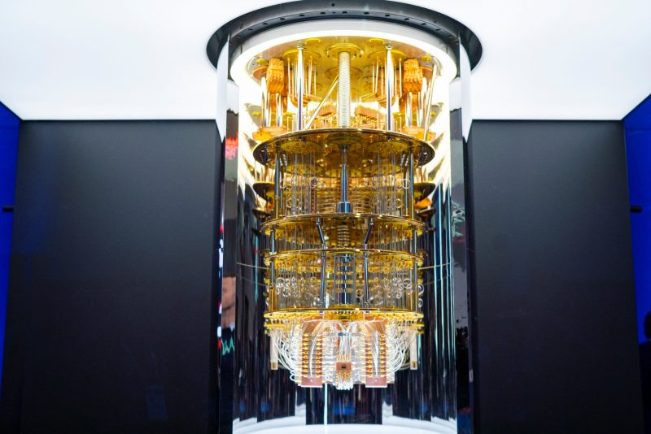

⠀
Red 5G: un gran empujón hacia la consolidación de la revolución digital que tiene como objetivo, entre otros, una mejor experiencia del usuario.⠀
Mejoras en la computacion cuantica: este nuevo tipo de informática permitiría resolver problemas antes imposibles o muy difíciles, como por ejemplo descubrir qué moléculas podrían producir medicamentos realmente efectivos”⠀
⠀
Mejoras en el Blockchain: Es conocido como un servicio de exploración de bloques de Bitcoin, así como una billetera de criptomonedas y un intercambio de criptomonedas que admite Bitcoin, Bitcoin Cash y Ethereum. las ventajas de esta tecnología son la inmediatez, la seguridad, la reducción de costos y la identificación de errores, entre otros.⠀
⠀
Conducción autónoma: La conducción autónoma consite en como un vehículo es capaz de imitar las capacidades humanas de manejo y control. Aun Faltan años para que las carreteras se adapten, con señales y pavimentos adecuados, a la conducción autónoma, pero sí veremos un cambio drástico en 2020 en cuanto al transporte de mercancías.⠀
⠀
la Nube: Aunque esta red por medio de alacenamiento de redes lleva ya su tiempo existiendo, se espera que en estos años se consiga llegar a una capacidad de almacenamiento de 175 zettabytes.⠀
⠀
Tecnoligia robotica: En el año 2020 podemos destacar a china por el uso y creacion de robots incluso para combatir el coronavirus.⠀
⠀